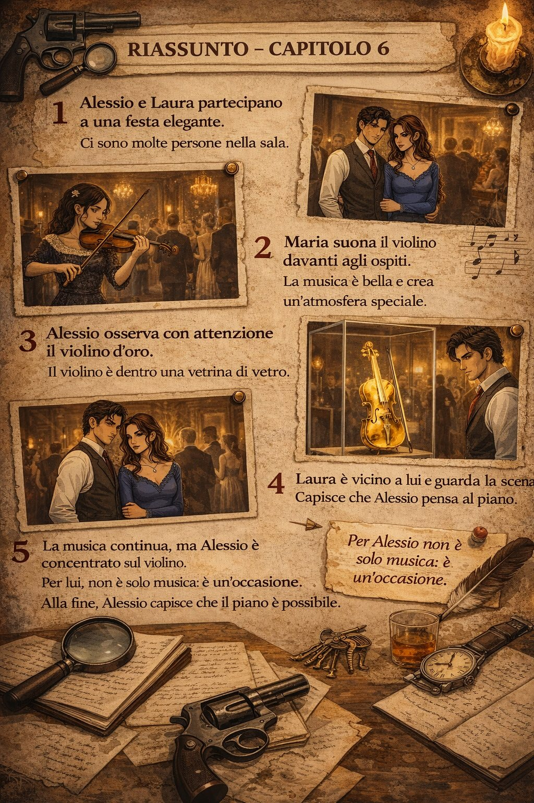

Capitolo 4: Il Bar La Luna
Leggi il capitolo in una pagina pulita e passa agli esercizi solo quando vuoi.

Alessio e Laura entrarono nel Bar La Luna, un locale buio e affumicato dove l’odore di vino e birra stantia si mescolava alle risate squillanti degli ubriachi. I tavoli di legno consumato erano pieni di bicchieri sporchi, e alle pareti c’erano poster sbiaditi di toreri e flamenco. Un uomo anziano russava in un angolo, la testa appoggiata sul bancone, mentre un jukebox gracchiava una vecchia canzone popolare.
Enrico li aspettava in fondo alla sala, seduto a un tavolo con due bicchieri di vino già ordinati. Fece loro un cenno con la mano.
— Allora, avete deciso? — chiese, sorseggiando il suo drink.
Alessio annuì. — Sì, ma vogliamo sapere come funziona. Tu cosa fai esattamente?
Enrico sorrise. — Io mi occupo della logistica. Informazioni, mappe, orari delle guardie. Tutto quello che vi serve per entrare e uscire senza problemi.
Laura incrociò le braccia. — E quanto prendi?
— Quarantacinque per me, cinquantacinque per voi — rispose Enrico, come se fosse la cosa più naturale del mondo.
Alessio sbatté il pugno sul tavolo, facendo sobbalzare i bicchieri. — No. Settanta per noi, trenta per te. O niente.
Enrico lo fissò per un lungo momento, poi scoppiò a ridere. — Sei un ragazzo intelligente, Alessio. Va bene, settanta a voi. Ma solo perché mi piaci.
Laura annuì, soddisfatta, ma Alessio era ancora diffidente. — Allora, com’è la situazione con Don Salvatore?
Enrico si schiarì la voce. — Don Salvatore non è un uomo qualsiasi. Qui a Málaga controlla il mercato delle armi illecite, ma è anche un grande filantropo. Fa donazioni agli ospedali, aiuta i poveri. Per questo la gente lo rispetta e lo protegge. Non sarà facile avvicinarlo.
— Allora come facciamo? — chiese Laura.
— Lui ha una debolezza — continuò Enrico. — La musica classica. Soprattutto il violino.
In quel momento, la porta del bar si aprì e una giovane donna entrò con passo sicuro. Aveva capelli neri e lunghi, occhi scuri e un violino sotto il braccio.
— Vi presento Maria Robles — disse Enrico. — Una violinista argentina che suona come un dio.
Maria sorrise e, senza dire una parola, sollevò il violino e iniziò a suonare. Le note riempirono il bar, così belle e pure che persino gli ubriachi smisero di ridere per ascoltare. Laura rimase affascinata, ma quando guardò Alessio, vide che fissava Maria con uno sguardo che non le piacque affatto.
— Per avvicinarvi al violino d’oro — spiegò Enrico — dovrete guadagnarvi la fiducia di Don Salvatore. Domani c’è un concorso di talenti in città. Maria parteciperà, e voi andrete con lei come suoi manager.
Laura annuì. — È un piano ragionevole.
Alessio, però, sembrava distratto. I suoi occhi erano ancora fissi su Maria, che ora riponeva il violino con un sorriso compiaciuto. Laura gli diede un colpetto sul braccio, e quando lui si voltò, gli lanciò un’occhiata gelosa.
— Tutto bene? — mormorò.
— Sì, sì — rispose Alessio in fretta. — Solo che… è un buon piano.
Enrico si alzò. — Bene, allora domani ci vediamo qui alle dieci. Maria passerà la notte con voi, così potrete organizzare i dettagli.
Uscirono dal bar, Maria al fianco di Alessio, mentre Laura camminava un passo indietro, osservando la scena con sospetto. La notte era calma, ma nell’aria c’era già la tensione di ciò che stava per accadere.